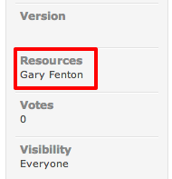
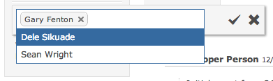
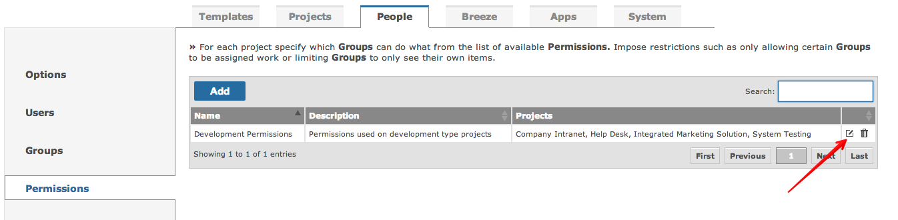
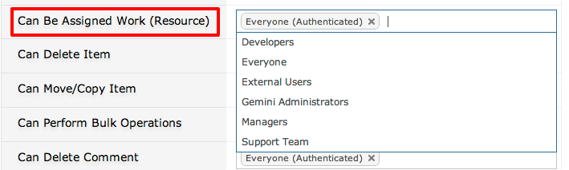

Every item can be assigned one or more resources - individuals that are responsible for working on the item.

Edit the item to remove or assign resources.

Permissions control who can work on items (resources). Gemini administrators can edit permissions and select who can be assigned work.

The permission "Can Be Assigned Work" should be granted to those user groups that need to work on items.
